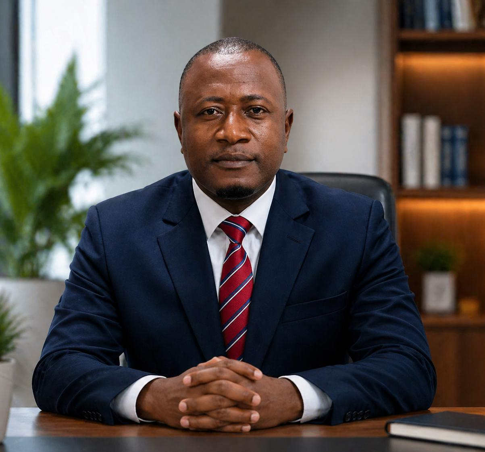

"To be a light for those with Down Syndrome and their families."
Based in Kahama, Tanzania, we support children and families affected by Down Syndrome through advocacy, education, and healthcare support to ensure they thrive with dignity.
Volunteers: Mathias Peje & Ngumiji Kazungu
1. Community Outreach: Direct home visits to families.
2. Advocacy: Raising public awareness in Kahama and beyond.
3. Transparency: We provide full reports for all international collaborations.